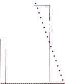
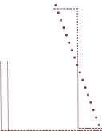

HEPTA SLAB
INSPIRED BY
ANTIQUE 307
DESIGNED BY
 

D
d
ABOUT THIS TYPEFACE
The Hepta Slab typeface was designed by Mike LaGattuta and takes inspiration from Antique and Egyptian typefaces popular in the nineteenth and early twentieth centuries. This Slab Serif typeface gained popularity as an eye-catching font for advertising posters.
With nine different weights, the thicker weights of this typeface were designed to catch your attention, while the thinner weights operate as body-text with slimmer and simpler designs reminiscent of popular sans-serif typefaces today. This character exemplifies the eye-catching nature of slab-serifs in the thicker weights, despite being a lowercase letter, while also displaying the elegent aesthetic of thinner weights.